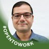

Ismail Butun
Project Manager and Postdoctoral Research Fellow at Florida Atlantic University
"I had a chance to work with Christofer Piedra during his tenure at Tecore Research Lab, during which he contributed much, especially in the DoD project on setting up a Linux-based Intrusion Detection System, or simply IDS.
Christofer is an extremely hardworking and dedicated professional who does much more than what is normally expected of him. Indeed, integrity and dependability shone through in all of the projects that he was working on. Taking responsibility was exceptionally well carried out; he delivered results while he kept integrity at its highest level.
What definitely sets Christofer apart is that he has great technical acumen, full of attention to detail with regard to Linux environments. He was instrumental in the success of our IDS project by applying his deep knowledge of system security and network defenses. His work ethic and commitment made him an invaluable asset within our team, and he could always be counted on to provide innovative solutions.
I do not doubt that Christofer's abilities and commitment will continue to make a positive impact wherever he goes. Therefore, I strongly recommend him to any organization that needs a responsible, honest, hardworking employee, and a team player.
Sincerely,
Dr. Ismail Butun
Lab Manager, Tecore Research Lab"